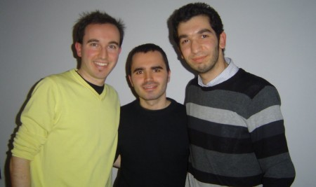

El blog-guía escrito por españoles en Bruselas para los hispanoparlantes que viven aquí y para los turistas que aprovechan los vuelos baratos para descubrir el chocolate, la cerveza, la Grand Place y tantas otras cosas buenas.
En Radio Alma, la radio española 101.9 de Bruselas, queremos empezar un nuevo programa y estamos buscando colaboradores que hablen sin tapujos ni vergüenzas. Se trata de un programa sobre sexo, que quiere ser fresco, ágil, sin tabúes, desenfadado y sin perder elegancia. Somos dos chicas españolas que lo estamos empezando, y tenemos algunas ideas para los primeros programas, pero estamos abiertas a sugerencias y comentarios. En concreto buscamos a gente joven (de 18 a 99 años, lo importante es la cabeza) que hable español y que viva aquí, en Bruselas, de forma más o menos permanente. Requisito indispensable: una mente abierta y muchas ganas de reírse. Vale sonrojarse y no hace falta tener experiencia en la radio, sólo ganas. El programa, de momento, duraría una hora y se emitiría una vez por semana. El día, a convenir. No se trata de explicar nuestra vida ni detalles personales, sino más bien de escoger un tema, investigar un poquito y hablarlo en antena. Nadie expuesto, sólo diversión.
Bruselas es una ciudad para disfrutarla y mucho más en verano. Por eso te proponemos una serie de ideas muy variadas para que aproveches todo lo que te ofrece la ciudad.
Estos últimos días, hemos prestado especial atención al Día Nacional de Bélgica que se celebró por todo lo alto en Bruselas. Realizamos un pequeño resumen de todos los actos de la Fiesta Nacional Belga. Esta festividad del 21 de julio, hace que cada año este día sea señalado en el calendario como la jornada en la que los belgas olvidan sus diferencias y sacan su lado más patriótico. El broche a la fiesta lo puso el espectáculo de fuegos artificiales que se lanzaron desde el jardín del Palais des Académies. Si no tuvisteis ocasión de asistir, nosotros estuvimos allí y grabamos un vídeo sobre los fuegos artificiales del 21 de julio para que no perdáis detalle.
Ferias y cruceros
Y como decíamos al principio, Bruselas ofrece su cara más lúdica en verano. Por eso destacamos dos actividades que se prolongarán a lo largo de julio y agosto. La primera de ellas es la Foire du Midi, una gigantesca feria que en su edición número 130 ocupa una superficie total de 1,7 kilómetros en el Bulevar de Midi, desde Porte de Hal hasta Porte de Anderlecht.
La segunda proposición que os hacemos es un crucero. Por extraño que parezca no es necesario salir de la capital de Europa para embarcarse en uno de ellos. ‘Brussels by Water’ organiza cruceros a diario excepto los lunes. Los hay de menos duración, solo por la ciudad, o algo más largos hasta la localidad de Vilvoorde.
Recién llegados
Pero no todo es fiesta en la vida y tampoco en Bruselas. Por eso también hemos dedicado tiempo esta semana a seguir conociendo a la gente nueva que llega a Bruselas. Esta vez fue el turno de Carmen Marco, una joven zaragozana que está encantada de vivir en Bruselas por el ambiente cultural y festivo de la ciudad, pero que no ha tenido suerte a la hora de alquilar una habitación en la que pasar su estancia. Unos problemas con obras en el edificio y con el mobiliario que no incluía la habitación no están haciendo que su paso por Bruselas sea todo lo gratificante que debería.
Alberto Pascual, Ricardo Blanco y Jorge Gutiérrez
Alberto Pascual y Jorge Gutiérrez, los presentadores de Objetivo Bruselas, que comenzaron el programa por el mes de enero cuando un manto de nieve cubría la ciudad siguen, ahora en verano, trabajando activamente en el blog . Pero desde la semana pasada me han dejado la responsabilidad de conducir el programa de radio y de escribiros semanalmente en BlogBruselas. Espero mantener su nivel. Aprovecho, pues, para presentarme. Soy Ricardo Blanco.
Esta semana en Objetivo Bruselas
Y en el próximo programa de radio de Objetivo Bruselas, muchos más contenidos. Atentos todos aquellos interesados por conocer otra cara de Bruselas, un auténtico belga nos la descubrirá. Pero también abordaremos los problemas de los transportes en Bruselas, sobre todo en los trenes. Además, continuaremos con la segunda parte de la Guía del Superviviente dedicada a la lista de la compra. Hemos hecho la compra por vosotros en tres supermercados diferentes y os contaremos cuáles son las diferencias de precios y de calidad. Todo esto y mucho más este martes 27 de julio de 19 a 20 horas en Radio Alma, la 101.9 de Bruselas.
El pasado 9 de febrero me entrevistaron Jorge y Alberto en Radio Almapara su programa Objetivo Bruselas. Tuvimos una buena charla sobre las bondades de esta ciudad con el pretexto de los primeros 500 mensajes de Blog Bruselas. Realmente me sorprendieron con la magdalena y la vela para celebrarlo 🙂
Buen estudio, buenos entrevistadores, buena coordinadora, y un muy buen rato.
El deseo lo mantengo: queremos más colaboradores en Blog Bruselas, más gente que quiera compartir su visión de la ciudad, de su vida aquí. Puedes ser un recién llegado o llevar mil años aquí: todas las visiones son interesantes porque nos ayudarán a descubrir y a ver la ciudad de una manera diferente.
Datos de audiencia no tengo, pero os puedo decir que subieron los fans de Blog Bruselas en Facebook y que me alegré de ver entre ellos algunas caras conocidas de las que hace tiempo no tenía noticias.